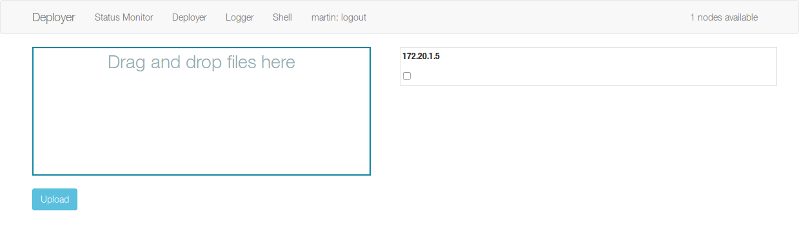
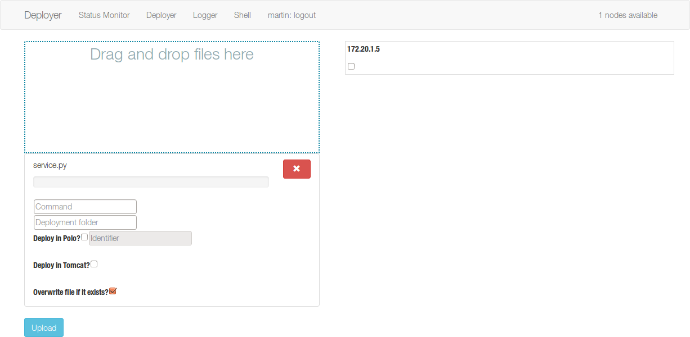
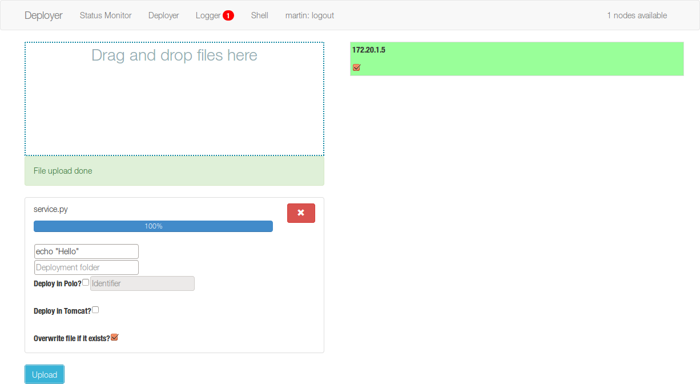

Deployer¶
The deployer distributes an executable through the desired nodes, along with some parameters and post-execution instructions.
The main view displays a list of the nodes that accept deployments and a drag-and-drop area where files can be added.
After dragging a file, a configuration menu is displayed, where the user can add customize the deployment:
- By default, the deployment folder is the $HOME of the user. It can be overridden using the folder input box. It accepts both absolute and relative (to $HOME) paths as well as the ~ alias. Please note that the deployer performs all operations using the user’s identity, and therefore the deployment can only be successful if done on paths that are writtable by the user.
- If the service has to be deployed on a local instance of Apache Tomcat the option Tomcat handles the deployment of the .war file (no activation whatsoever is done, but Tomcat can be configured (and sometimes it is set by default) to process new containers automatically upon copying to the services folder).
- If the service has to be deployed on MarcoPolo (and you do not want to use the
Polo binding), the parameter Deploy on Polo? can be set to True and the identifier of the service must be provided. - If the service must not overwrite previous deployments, uncheck the Overwrite file if it exists box.
- The user can request the execution of a command after the deployment is done. The output of the command will appear in the Logger section (see Logger) and a notification will display.
This is the state after a successful deployment:
